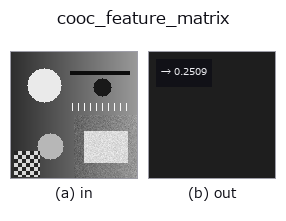

texture op• Datenarten: image → feature
• Aufruf: fullseye.apply(img, "cooc_feature_matrix", a=0.5, b=0.5) (das 2-D-Modell ist ein Bild plus zwei skalare Regler a,b∈[0,1])
• HALCON-Äquivalent: cooc_feature_matrix (Bedeutung und Parameter sind in der HALCON-Referenz nachzulesen)

*Die Abbildung ist die tatsächliche Ausgabe auf einer synthetischen 128×128-Eingabe. Links Eingabe, rechts Ausgabe. Punktwolken als Draufsicht-Streudiagramm (Helligkeit = z), 1-D-Reihen als Linie, Volumen als Maximum-Projektion entlang z, Videos als mittleres Bild, komplexe Bilder als Betrag; Rückgabewerte, die kein Bild ergeben, werden als Werte gezeigt.*
Regler a durchfahren (0,1 / 0,5 / 0,9, der andere Regler auf Standard):
▸ cooc_feature_matrix: knob a sweep (docs site)
*Regler b ändert die Ausgabe nicht (gemessen: identisch bei 0,1 / 0,5 / 0,9).*
Berechnet das Haralick-Texturmerkmal `energy (winkelförmiges zweites Moment, d. h. wie konzentriert die Matrixwerte sind = Texturgleichmäßigkeit) aus einer Grauwert-Kookkurrenzmatrix (GLCM, skimage.feature.graycomatrix, quantisiert auf 16 Stufen, Abstand 1+3*a, Winkel 0 Grad). Entspricht HALCONs cooc_feature_matrix` (Calculate gray value features from a co-occurrence matrix.) (HALCON kann mehrere Merkmale und mehrere Winkel gleichzeitig zurückgeben, hier ist dies jedoch auf energy bei festem Winkel 0 Grad vereinfacht).
> Die ausführliche Beschreibung unten ist der Originaltext — Zusammenfassung und Überschriften sind übersetzt.
`a が共起を取る画素間距離を 1〜4 の範囲で振る。★b >= 0.75 で **0/45/90/135 度の 4 方向を平均**する(既定 b=0.5` は従来どおり 0 度だけなので、既存の結果は 1 ビットも変わらない)。
実写テクスチャ(brick / grass / gravel)を回して測ると(`poc_real_texture_invariance の節 6)、**効くかどうかは距離 a` で変わる**:
• まず `a` を伸ばすと素材どうしの分解能そのものが潰れる(0.0328 -> 0.0122、2.7 分の 1)。異方な brick の振れ幅は分解能の 0.30 -> 3.13 倍へ膨らむ。
• 4 方向平均は等方な素材には短中距離で効く(grass 0.23 -> 0.12、gravel 0.20 -> 0.11)。
• 異方な brick には距離 4 でだけ効き(3.13 -> 1.54)、距離 1 では逆に悪化する(0.30 -> 0.56)。
• 距離 4 まで来ると等方な grass すら改善しない(0.17 -> 0.19)—— 分解能が潰れたあとは平均しても取り返せない。
長い距離で使うときは、平均を掛ける前に素材がまだ分かれているかを確かめること。なお「取り違えの回数」で測ると手順(補間の次数・切り出し方・角度の刻み)に敏感で、比(振れ幅 / 分解能)のほうが安定する。
• Leitfaden zur Familie gallery2d_texture_freq
• Katalog der Beispieldaten (Download-URLs / Lizenzen) — 2-D nutzt skimage.data (BSD/Public Domain) plus synthetische Bilder, 3-D nennt Download-URLs echter Datenquellen (Stanford, PDS, …).
• Herkunft und Literatur der Operatoren — die Quellen der Forschung/Verfahren, auf denen diese Operatorfamilie beruht.
• Der kanonische Algorithmus (Autor, Jahr) und seine Anwendungen stehen im Familienleitfaden oben.
Das Programm unten ist nachweislich lauffähig (gleiche Eingabe wie die Abbildung). In der Studio-Hilfe wird dieser Block zu Schaltflächen, die es sofort laden und ausführen.
cooc_feature_matrix 0.50 0.50
▸ Load this pipeline · Load & run
• gallery2d_texture_freq — py -3.11 examples/gallery2d_texture_freq.py
• poc_real_texture_invariance — py -3.11 examples/poc_real_texture_invariance.py
feature als Eingabe)texture)std_filter · gabor · sk_frangi · sk_meijering · sk_hessian · sk_gabor · sk_lbp · sk_entropy
*Provenance: ops.py — 2D Operator-Registry. Diese Notiz wird von tools/opdocs.py md erzeugt (nicht von Hand bearbeiten).*
© 2026 Kazufumi Furuse — Fullseye operator documentation. Licensed under Apache-2.0.
{kind=link}